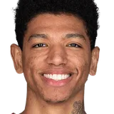

Played 2 seasons for 2 teams; his teams went 0–12 in his games.
Jump to: Record by opponent · Season by season · Teammate help
Compare Didi Louzada with…
Final NBA finish, season by season
Title Finals Other playoffs Missed playoffs. #1 = champion; the dashed line is last place that season. Each point opens that season's final standings.
All 30 teams ranked in 2020-21, his best finish (#21)Teammate help
No honored teammate in any season: help 0.
Career
Career records (W–L, W − L, with and without) include 2026-27 games through Nov. 22, 2026; season counts and finishes are through 2025-26. Each card opens its board in the same scope. How we count.

Latest completed seasons
- 2021-22·
 Portland·#25 of 3027–55 · Missed playoffs
Portland·#25 of 3027–55 · Missed playoffs - 2020-21·
 New Orleans·#21 of 3031–41 · Missed playoffs
New Orleans·#21 of 3031–41 · Missed playoffs
Season by season
Newest first; every header sorts. Final NBA finish is the team's rank among all teams that season (#1 = champion) and opens that season's standings. "Without him" uses the team-season window; the span line counts only the games between his first and last game for the team.
| 2021-22 | #16 of 30 | 36–46 43.9% | Lost 1st round 2–4 | 2 of 82 | 0–2 0.0% | 32–41 43.8%span: N/A, gap N/A | −43.8 | |
| 2021-22 | #25 of 30 | 27–55 32.9% | Missed playoffs | 7 of 82 | 0–7 0.0% | 23–43 34.8%span: N/A, gap N/A | −34.8 | |
| 2020-21 | #21 of 30 | 31–41 43.1% | Missed playoffs | 3 of 72 | 0–3 0.0% | 31–38 44.9%span: N/A, gap N/A | −44.9 |
On/off, starts and close games
From the lineup data, 1996-97 on. On/off is net points per 100 possessions with him on the floor minus off, a different unit from the win-rate gaps. Started and off the bench are team records in those games; close games are those within 5 points in the last 5 minutes with him on the floor.
| 2021-22 | +6.8 | N/A | 0–2 0.0% | N/A | |
| 2021-22 | −9.3 | 0–1 0.0% | 0–6 0.0% | N/A | |
| 2020-21 | +3.0 | N/A | 0–3 0.0% | 0–1 0.0% |
Teammate help by season
Two separate numbers per season, each with every teammate that adds to it. Help this season = Teammates Score points for honors won that season by teammates who shared a game with him. Help coming in = the same teammates' honors from the season before. How help works.
- 2021-22New OrleansHelp this season: 0, no honored teammate
- 2021-22PortlandHelp this season: 0, no honored teammate
- 2020-21New OrleansHelp this season: 0, no honored teammate
More: help coming in
Help coming in (teammates' honors the season before): 0.5 = 0.5 Eric Bledsoe
Record against each opponent
Regular season, through 2025-26 (2026-27 games not included): 12 games, 0–12, against 8 franchises.
Grouped by franchise (named as today); game lists keep each team's name that season. Filters and the tab are kept in the URL, so a filtered view can be shared.
| Games list | |||||||
|---|---|---|---|---|---|---|---|
| 2 | 0–2 | 0.0% | −2 | N/A | 2020-21 to 2021-22 | ||
| 2 | 0–2 | 0.0% | −2 | N/A | 2020-21 to 2021-22 | ||
| 2 | 0–2 | 0.0% | −2 | N/A | 2021-22 | ||
| 2 | 0–2 | 0.0% | −2 | N/A | 2021-22 | ||
| 1 | 0–1 | 0.0% | −1 | N/A | 2020-21 | ||
| 1 | 0–1 | 0.0% | −1 | N/A | 2021-22 | ||
| 1 | 0–1 | 0.0% | −1 | N/A | 2021-22 | ||
| 1 | 0–1 | 0.0% | −1 | N/A | 2021-22 |
Rows add up to his career record in his games. A playoff series counts when he played in it; early round-robin games show as games only. How we count.
Arrival and departure
Team wins per 82 games the season before he arrived vs his first season there, and his last season vs the season after he left. He leaves a team only when his next season with games is for another team (or he never plays again); whole seasons he missed and came back from are one "Missed" row with the team's record without him. Per 82 so short seasons compare fairly. These are team records, not a measure of what he did.
| Left | after 2021-22 | 2021-22: 36–46 36.0 per 82 | 2022-23: 42–40 42.0 per 82 without him | +6.0 wins | |
| Left | after 2021-22 | 2021-22: 27–55 27.0 per 82 | 2022-23: 33–49 33.0 per 82 without him | +6.0 wins | |
| Arrived | 2021-22 | 2020-21: 42–30 47.8 per 82 | 2021-22: 27–55 27.0 per 82 | −20.8 wins | |
| Debut | 2020-21 | 2019-20: 30–42 34.2 per 82 | 2020-21: 31–41 35.3 per 82 | +1.1 wins |
Seasons split between teams
Each team's record before his first game for it, inside his window (games with and without him) and after his last game, in the seasons he played for two or more teams.
| 2021-22 | Nov. 3, 2021 to Nov. 5, 2021 | N/A | 32–43 42.7% | 4–3 57.1% | 2 | |
| 2021-22 | March 30, 2022 to April 10, 2022 | 4–5 44.4% | 23–50 31.5% | N/A | 7 |
With and without his teammates
His 12 teammates with the most regular-season games together. "Together" is the team's record in the games both played for it; "Without him" is the team's record in the games Didi Louzada played for that team while the teammate was on it (between the teammate's first and last game for the team, the appearance span) and the teammate did not play. Fewer than 20 games without him: no gap. Games through Nov. 22, 2026. How we count.
- Together
- 0–7 0.0%
- Without him
- N/A N/A
- Gap
- Too few games without him
- Reggie PerryPortland 2021-22
- Together
- 0–7 0.0%
- Without him
- N/A N/A
- Gap
- Too few games without him
 Keljin BlevinsPortland 2021-22
Keljin BlevinsPortland 2021-22- Together
- 0–7 0.0%
- Without him
- N/A N/A
- Gap
- Too few games without him
- Greg BrownPortland 2021-22
- Together
- 0–7 0.0%
- Without him
- N/A N/A
- Gap
- Too few games without him
 Keon JohnsonPortland 2021-22
Keon JohnsonPortland 2021-22- Together
- 0–7 0.0%
- Without him
- N/A N/A
- Gap
- Too few games without him
 Ben McLemorePortland 2021-22
Ben McLemorePortland 2021-22- Together
- 0–7 0.0%
- Without him
- N/A N/A
- Gap
- Too few games without him
- Drew EubanksPortland 2021-22
- Together
- 0–6 0.0%
- Without him
- N/A N/A
- Gap
- Too few games without him
 Brandon WilliamsPortland 2021-22
Brandon WilliamsPortland 2021-22- Together
- 0–6 0.0%
- Without him
- 0–1 0.0%
- Gap
- Too few games without him
 Willy HernangomezNew Orleans 2020-21 to 2021-22
Willy HernangomezNew Orleans 2020-21 to 2021-22- Together
- 0–5 0.0%
- Without him
- N/A N/A
- Gap
- Too few games without him

- Together
- 0–5 0.0%
- Without him
- N/A N/A
- Gap
- Too few games without him
 Nickeil Alexander-WalkerNew Orleans 2020-21 to 2021-22
Nickeil Alexander-WalkerNew Orleans 2020-21 to 2021-22- Together
- 0–5 0.0%
- Without him
- N/A N/A
- Gap
- Too few games without him
 Kira LewisNew Orleans 2020-21 to 2021-22
Kira LewisNew Orleans 2020-21 to 2021-22- Together
- 0–5 0.0%
- Without him
- N/A N/A
- Gap
- Too few games without him